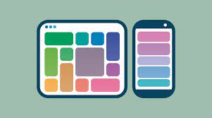

el proposito de este sitio web se dio debido a la necesidad de
elaborar recursos educativos digitales para dinamizar las estrategias de
aprendizaje que son necasario a raiz de la pandemia mundial que estamos viviendo donde se dan herramientas para la educacion y el aprendizaje, esta pagina se enfocara en el lenguaje de html y se profundizara en la utilizacion y definicion de las Etiquetas semanticas y la tecnica Css Grid.
Etiquetas Semanticas

Las etiquetas semánticas ayudan a definir la estructura del documento y permiten que las páginas web sean mejor indexadas por los buscadores. Una etiqueta se califica como semántica si tiene que ver el significado, es decir, si nos informa sobre lo que trata su contenido. Por ejemplo, la etiqueta SECTION nos dice que contiene una sección o capítulo dentro de la página. Frente a las etiquetas semánticas tenemos otros tipos de etiquetas como las que afectan al formato, como UL, a multimedia, como VIDEO, etc.
Diez, T., Domínguez, M. J., Martínez, J. J., & Sáenz, J. (2012). Creación de páginas Web accesibles con HTML5.
Css Grid
es una técnica de las Hojas de Estilo en Cascada que permite a los desarrolladores web crear diseños complejos y adaptables con mayor facilidad en todos los navegadores. Ha habido otros métodos para controlar los métodos de diseño de páginas web, como las tablas, el modelo de caja, y CSS flex. CSS grid no es actualmente un estándar oficial (es una W3C Candidate Recommendation) aunque ha sido adoptada por la mayoría de los principales navegadores.
CSS grid layout. (2020, 15 de diciembre). Wikipedia, La enciclopedia libre.desde https://es.wikipedia.org/w/index.php?title=CSS_grid_layout&oldid=131716163.
